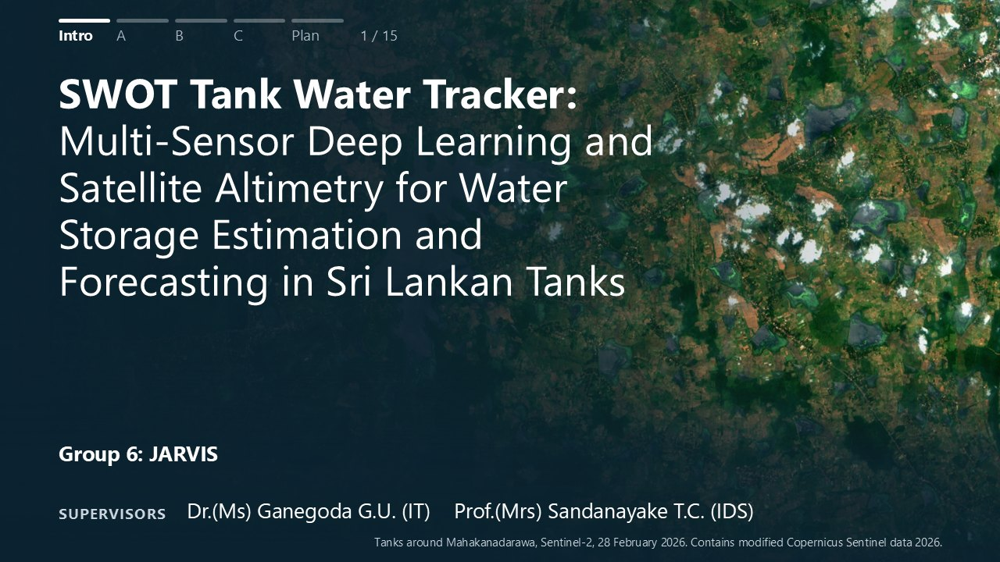

Presentation
Our proposal talk
The 15 slides of our proposal talk, submitted with the proposal on 30 October 2026. Use the arrows, the arrow keys, a swipe on a phone, or the small pictures below.

Last updated 31 October 2026.
Datasets and links
Every dataset is free and public
Each link was opened and checked on 28 October 2026. For every dataset's size, how good it is for our tanks and who uses it, see the Datasets page.
Water height (SWOT)
- SWOT Lake and River Explorer click any tank to see its readings
- NASA Earthdata: SWOT lake product, version D the files we use
- Hydrocron the free service that gives each lake's heights
Water area (pictures)
- Copernicus Browser Sentinel-1 and -2 pictures of our tanks
- Planetary Computer: Sentinel-1 radar terrain-corrected radar
- ASF: NISAR radar L-band radar
- JAXA ALOS-2 radar on AWS L-band radar
- S1S2-Water AI training data, 65 areas in 29 countries
Ground truth
- Irrigation Department: reservoir water level the daily sheet
- Irrigation Department: reservoir status web page
- Irrigation Department: reservoir map layer full supply levels
- Kanhindawewa drone survey area and capacity every 1 ft (PDF)
- Mahaweli Authority: reservoir status reports daily levels